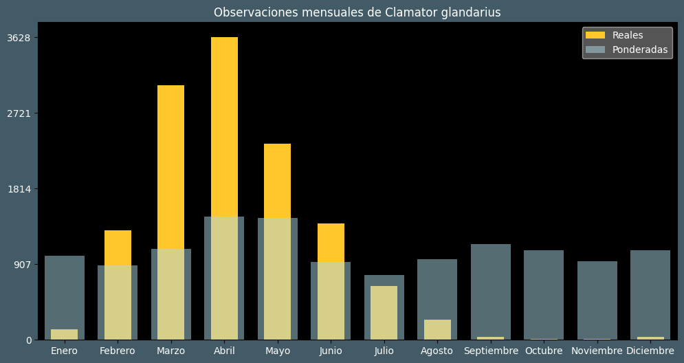

Observaciones por mes
Observations por hora

Categoría IUCN: LC
Género: Clamator
Familia: Cuculidae
Orden: Cuculiformes
Descubrimiento: Linnaeus (1758)
| Idioma | Nombre |
|---|---|
| Afrikaans (af) | Gevlekte koekoek |
| Arabic (ar) | وقواق ارقط كبير |
| Belarusian (be) | ? |
| Bulgarian (bg) | Качулата кукувица |
| Catalan (ca) | Cucut reial europeu |
| Chinese (zh) | 大斑凤头鹃 |
| Chinese traditional (zh-TW) | 大鳳頭鵑 |
| Croatian (hr) | Afrička kukavica |
| Czech (cs) | Kukačka chocholatá |
| Danish (da) | Skadegøg |
| Dutch (nl) | Kuifkoekoek |
| English (en) | Great spotted cuckoo |
| Estonian (et) | Harakkägu |
| Finnish (fi) | Harakkakäki |
| French (fr) | Coucou geai |
| German (de) | Häherkuckuck |
| Greek (el) | Κισσόκουκος |
| Hebrew (he) | קוקיה מצויצת |
| Hungarian (hu) | Pettyes kakukk |
| Icelandic (is) | Dílagaukur |
| Indonesian (id) | ? |
| Italian (it) | Cuculo dal ciuffo |
| Japanese (ja) | マダラカンムリカッコウ |
| Korean (ko) | ? |
| Latvian (lv) | Lielā cekuldzeguze |
| Lithuanian (lt) | Didžioji kuoduotoji gegutė |
| Maceodnian (mk) | Цуцулеста кукавица |
| Malayalam (ml) | ? |
| North_sami (se) | Skiregiehka |
| Norwegian (no) | Skjæregjøk |
| Persian (fa) | کوکوی خالدار |
| Polish (pl) | Kukułka czubata |
| Portuguese (pt) | Cuco-rabilongo |
| Russian (ru) | Хохлатая кукушка |
| Serbian (sr) | Ćubasta kukavica |
| Slovak (sk) | Kukavica chochlatá |
| Spanish (es) | Críalo europeo |
| Swedish (sv) | Skatgök |
| Thai (th) | ? |
| Turkish (tr) | Tepeli guguk |
| Ukrainian (uk) | Зозуля чубата |